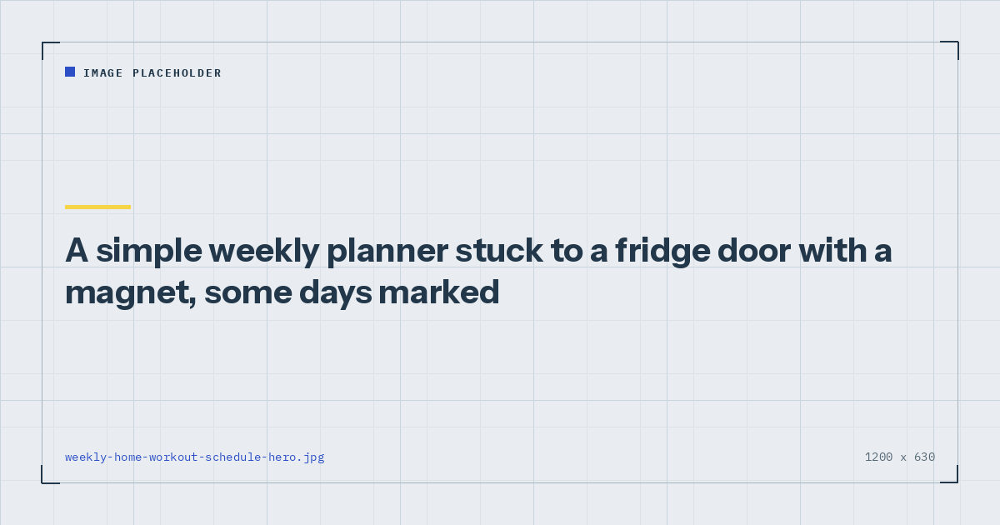

Quick Workouts & Plans
A Weekly Home Workout Schedule You Can Actually Keep
Most schedules are designed for an ideal week. This one is designed for a normal one, which means it assumes something will go wrong and still works when it does.

Almost everyone builds their training week during a period of high motivation, which is precisely when their estimate of future availability is least accurate. The schedule that results describes a week that occurs perhaps twice a year.
A schedule worth having is one that produces a decent outcome on a bad week, not an excellent outcome on a perfect one. Everything below follows from that.
The principle: plan for the bad week
Take the number of sessions you believe you can do, and subtract one. That is your schedule.
This sounds like defeatism. It is the opposite. A three-day plan completed three times produces a better outcome than a five-day plan completed twice, for two reasons. The obvious one is that three sessions beats two. The less obvious and more important one is that hitting your target builds the sense that the plan works, whereas repeatedly missing it builds the sense that you are failing at it — and that perception, rather than the missing volume, is what causes people to abandon routines. This is the mechanism behind the six-week drop-off.
The corollary: it is always available to do an extra session on a good week. An unplanned bonus session costs nothing psychologically. A planned session you missed costs a great deal.
Templates by number of days
| Days | Pattern | Structure |
|---|---|---|
| 2 | Tue / Sat | Two full-body sessions, 35–40 min |
| 3 | Mon / Wed / Fri | Three full-body sessions, 30 min |
| 4 | Mon / Tue / Thu / Fri | Upper / lower / upper / lower, 30 min |
| 5 | Mon–Fri | Upper / lower / rest-day walk / upper / lower |
The two-day and three-day versions should both be full-body, because at that frequency any split leaves parts of you trained once a fortnight. At four days, upper/lower becomes the better structure. The reasoning is set out in full body vs split routines.
For the actual sessions, the three-day split is written out in full and works as the basis for all of these.
Anchoring sessions to something fixed
A time of day is a weak anchor because days vary. An existing event is a strong one, because it happens regardless of how you feel about training.
Good anchors: immediately after work before sitting down, while dinner is in the oven, straight after the school run, before the shower you take anyway. The common feature is that they are already reliably occurring, so the training inherits their reliability rather than needing its own.
Bad anchors: “in the evening”, “when I get a chance”, “before bed”. These are intentions rather than cues, and they compete with everything else in the same window.
The behavioural mechanism here is worth understanding rather than just following, and it is covered in habit stacking for exercise.
What to do when the week goes wrong
Four rules, in priority order. The first matters more than the other three combined.
1. Never miss two planned sessions in a row. One missed session is noise. Two consecutive misses is the beginning of a pattern, and the third is much easier to miss than the second. If a session goes, protect the next one at almost any cost, including by shortening it drastically.
2. Shift rather than skip. If Wednesday does not happen, move it to Thursday and push Friday to Saturday. The spacing matters more than the specific days.
3. Have a defined minimum session. Ten minutes, three exercises, two sets each. Written down in advance so it is not a decision made while tired. This is the single most useful thing on the list after rule one.
4. Do not try to make up missed volume. Doubling up a session to compensate produces a workout you recover from badly and increases the chance of missing the next one. The week is gone; the following week is the one that matters.
Habit research consistently finds that a single lapse has little effect on whether a behaviour eventually becomes automatic, while consecutive lapses have a substantially larger effect. Protecting against the second miss rather than agonising over the first is therefore the higher-leverage intervention.
Building the rest days deliberately
Rest days are part of the schedule, not the absence of one. Adaptation happens between sessions, and a plan with no genuine recovery is a plan that produces steadily worsening sessions.
What belongs on a rest day: walking, which contributes to the aerobic half of the activity guidelines that strength training does not cover,1 and light mobility work if you want it. What does not: hard conditioning sessions, which compete for the same recovery capacity as the strength work and quietly turn a three-day plan into a five-day one.
Sleep is the part of recovery that does the most and gets scheduled the least. Its effects on training performance are reasonably well documented,2 and an extra hour on three nights a week will do more for most home trainees than an additional session would.
Reviewing the schedule every six weeks
Set a reminder for six weeks out and ask three questions.
What percentage of planned sessions did I complete? Above 80%, consider adding a day. Between 60 and 80%, keep the schedule as it is. Below 60%, the schedule is wrong for your life — reduce it by a day rather than continuing to fail at it.
Are my numbers moving? Reps on the first exercise of each session, at the same variation and tempo. If not, the limiting factor is usually effort, sleep or food rather than the schedule.
Which session gets missed most? There is almost always one. Move it to a different day or a different anchor rather than continuing to schedule it where it does not fit.
Where to go next
Once the schedule is set, the three-day split gives you the sessions to put in it. If adherence rather than programming is the real problem, start with how to actually stick to a home workout habit.
Frequently asked questions
How should I schedule home workouts during the week?
Take the number of sessions you believe you can manage and subtract one, then anchor each session to an event that already happens reliably rather than to a time of day. Spread the sessions evenly with at least one day between them.
How many rest days should I have between workouts?
At least one between resistance sessions targeting the same muscle groups. On a three-day full-body schedule that means training every other day, which also leaves room for the week to go wrong without losing a session entirely.
What should I do if I miss a workout?
Shift it rather than skipping it, and protect the following session above all else. One missed session has little effect; two consecutive misses is the point at which routines start unravelling. Do not attempt to make up the missed volume by doubling a session.
Is it better to work out on weekdays or weekends?
Whichever is more reliable for you. What matters is that sessions are spaced with recovery between them and anchored to something that happens regardless of motivation. Many people find weekday evenings less reliable than they expect.
How often should I change my workout schedule?
Review it every six weeks. If you completed more than 80% of planned sessions, consider adding a day. If you completed fewer than 60%, reduce the schedule rather than continuing to miss it.
Sources and further reading
- World Health Organization. WHO Guidelines on Physical Activity and Sedentary Behaviour. 2020.
- Bonnar D, Bartel K, Kakoschke N, Lang C. “Sleep Interventions Designed to Improve Athletic Performance and Recovery: A Systematic Review of Current Approaches.” Sports Medicine, 2018;48(3):683–703. PubMed.
- NHS. Physical activity guidelines for adults aged 19 to 64.
- Schoenfeld BJ, Ogborn D, Krieger JW. “Effects of Resistance Training Frequency on Measures of Muscle Hypertrophy: A Systematic Review and Meta-Analysis.” Sports Medicine, 2016;46(11):1689–1697. PubMed.
Comments
Comments are not enabled yet. Add a hosted comment embed (Disqus, Commento, Giscus) inside this container when you are ready.